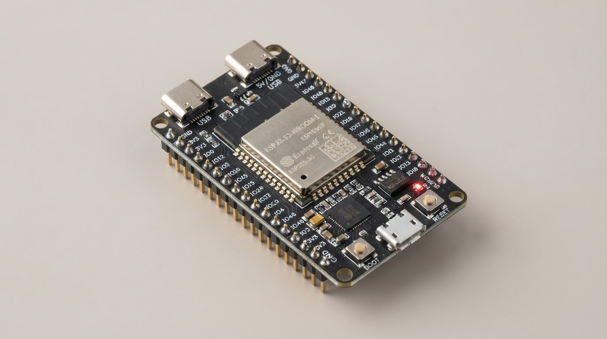

첫 번째보드 준비하기
01
어떤 보드가 있나요?
어른과 함께 보드 이름을 찾아봐요!
어떤 보드인지 모르겠다면?
보드에 적힌 이름을 확인하거나 선생님, 보호자에게 물어봐요.

어른과 함께 보드 이름을 찾아봐요!
보드에 적힌 이름을 확인하거나 선생님, 보호자에게 물어봐요.

어른과 함께 천천히 준비해요!
어떤 선이 필요한지 어른에게 물어봐요.
어려우면 도움을 요청해도 괜찮아요.
이 화면은 시연용이에요. 네트워크 설정과 실제 보드 연결은 아직 준비 중입니다.
우리에게 네 생각을 들려줘!
어른과 함께 글로 적어도 괜찮아요.
마음에 드는 순간을 골라줘!
어떤 때에 시작하면
재미있을까?
고른 내용을 함께 확인해봐요.
바꾸고 싶다면 뒤로 가서 다시 고를 수 있어요.